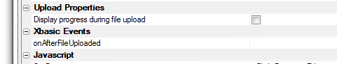
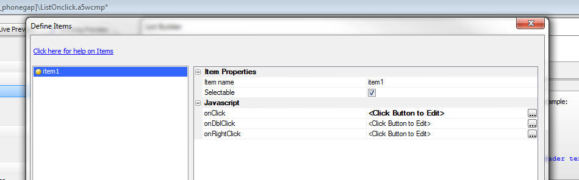
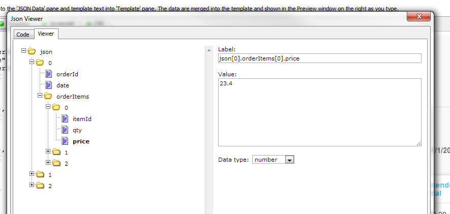
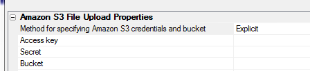
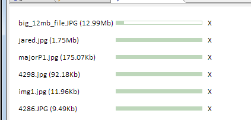
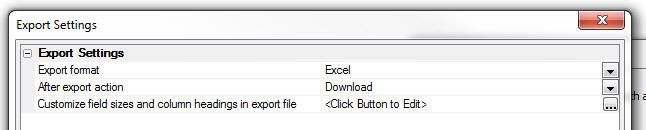

This document describes the updates and fixes made to Alpha Anywhere since its initial release.
To see the 'What's New in V12' document (which describes all of the new features in Alpha Anywhere's initial release) please click here.
Please note that Alpha Anywhere patches are only available to users with
a current subscription.
You can verify your subscription status from within Alpha Anywhere by
going to Help, About, or by clicking this link shown here (https://activation.alphasoftware.com/subscriptionStatus.aspx).
If you install an update for which your subscription is not entitled,
you will need to uninstall the update and rollback to an older version
that you are authorized to use in order to continue using Alpha
Anywhere.
In addition to the official updates that Alpha Software makes available from time to time (which are described in this document), we also make available our internal pre-release builds that allow you to see what features have been added and what bugs have been fixed since the last official update. The features and bug fixes in the pre-release build will be part of the next official update. To see the pre-release notes, please click here.
| UX Component | File Upload to Amazon S3 Storage |
Amazon S3 is a popular service for storing
files. In this video we show how you can build a
UX component that allows a user to upload files
from their machine directly to S3 storage. Watch Video - Part 1 Watch Video - Part 2 Download Component Date added: 2014-12-31 In this next vide we show how you can make an Ajax callback after all of the files have been uploaded. By making an Ajax Callback this action can be used as a replacement for the 'File Upload - User Defined' action in Action Javascript: Watch Video - Part 1 |
| UX and Grid Component | Image Upload |
When you use the Image Upload action in Action
Javascript to upload an image to an image field
in a database you now have the option of
uploading the image to Amazon S3 storage, rather
than to a folder on the Alpha Server. This video shows how to set up image upload to Amazon S3 and discusses some of the benefits of upload to images to Amazon S3, rather than to the Alpha Anywhere server that is hosting your application. Watch Video - Part 1 Watch Video - Part 2 Watch Video - Part 3 Date added: 2015-01-28 |
| UX Component | Applying Security Client-Side |
A common pattern in applications is to control
the visibility (or enabled state) of certain
controls on a page based on the 'role' that the
user has in the application security framework.
For example, a button might only be visible to
users in the 'Administration' role. Typically, the security settings are enforced server-side. But in some situations you might want to enforce the security rules on the client-side. In this video we show how controls in a UX can be shown/hidden client-side based on the user's role. Watch Video - Part 1 Watch Video - Part 2 Download Component Date added: 2015-02-06 |
| UX Component - List Control | Exporting Data in List to Excel or Ascii Files |
A popular feature in the Grid component is the
ability to export the data in the Grid query to
an Excel or Ascii file. The UX component List
control also allows the data in the List to be
exported to Excel or Ascii. When you export data
from a List you can either export the data
currently shown in the List, or the data in the
query that the List is based on. Setting up the
code to export the List data is easily done
using Action Javascript. In this video we show how the data in a List and in a List query can be exported to Excel. Watch Video Download Component Date added: 2015-02-09 |
| UX Component | 'File Upload' Action in Action Javascript |
This video shows how you can configure the UX
component to upload a file to the Alpha Anywhere
server and then store the filename of the
uploaded file in a character field in the table
to which the UX component is data bound. Watch Video - Part 1 Watch Video - Part 2 Date added: 2015-02-15 |
| UX Component | 'File Upload' Action in Action Javascript - Uploading to Amazon S3 |
This video shows how you can configure the UX
component to upload a file to Amazon S3 storage
and then store the object name of the S3 object
in a character field in the table to which the
UX component is data bound. TIP: It is recommended that you watch these videos (Watch Video - Part 1 Watch Video - Part 2 ) which discuss uploading files to the Alpha Anywhere server (as opposed to Amazon S3) before watching this video. Watch Video - Part 1 Watch Video - Part 2 Date added: 2015-02-15 |
| UX Component | File Download from Amazon S3 |
This video shows how you can use the File
Download action in Action Javascript to download
files that were previously uploaded to Amazon S3
storage. The video discusses the two different download modes - 'Indirect' (in which the Alpha Anywhere server retrieves the file from S3 and then sends it to the client) and the much more efficient 'Direct' mode (in which the file is downloaded to the client directly from Amazon S3 storage, thus placing minimal load on the Alpha Anywhere server). Watch Video - Part 1 Watch Video - Part 2 Date added: 2015-02-15 |
| UX Component | File Upload to Amazon S3 Storage - Ajax Callback On Complete |
When all files have been uploaded to S3 a
Javascript event is fired, but there is no
property in the builder that allows you to
specify the name of an Xbasic function to
execute. In this video we show how an Ajax callback can be made after all of the files have been uploaded to S3. The Xbasic function that handles the callback gets passed an array with the names of all of the files that were uploaded. A typical use case for this technique would be to store the name of the files that were uploaded in some database on the server. Watch Video - Part 1 Date added: 2015-02-18 |
| UX Component | Stripe Checkout |
The Stripe API allows you to use the popular
Stripe service to process credit card
transactions. Watch Video Download Component Date added: 2015-04-01 |
| UX Component - List Control | Client-side Summary Values - Aligning Summaries with List Columns |
The List control allows you to insert
client-side group breaks in a List and to
display summary values in the group headers and
footers. In a columnar List layout you typically
want to align these summary values with the
appropriate List columns. In this video we show how a genie can generate the necessary Javascript to make it easy to align the summary data with the corresponding List column. Watch Video Download Component Requires build 4465 or above Date added: 2015-04-07 |
| Reports | Linked Reports |
The Alpha Anywhere report writer lets you create
'Linked reports'. A linked report is a report
that is embedded inside a parent report and
linked on some common fields. Linked reports can
themselves also contain other linked reports. In this video we take a simple database that has a 'customer', 'orders' and 'payments' table and create reports on each of these tables. We then link the 'orders' and 'payments' reports into the parent 'customer' report. When you use linked reports you will often want to reference fields values in the linked reports from the parent report. The video shows how this is done by computing the net amount due for each customer, which is the total for their orders minus the total for their payments. Watch Video - Part 1 Watch Video - Part 2 Watch Video - Part 3 Watch Video - Part 4 Download Files Requires build 4469 or above Date added: 2015-04-17 |
| UX Component - List Control | Using the a5-item Template Item Attribute to Add Custom Event Handler to the List Row Template |
Each row in a List control is rendered by
merging data into a row template. The row
template is standard HTML which you are free to
edit. You can include events in the HTML, but
adding onClick and other events directly into
the HTML template is not efficient and does not
work well on touch enabled devices. A much
better solution is to use 'template items' to
add custom events to the HTML template. In this video we show how the a5-item attribute can be added to the HTML template and how you can define event handlers for these 'template items'. Watch Video Requires build 4473 or above Date added: 2015-04-17 |
| UX Component - List Control | Field Level Events - Adding Events for Click, Double Click and Right Click on a Field in a List |
The List control has several events that fire
when the user clicks, double clicks, taps, etc.
on a List row. Now there are additional events
that fire when the user clicks, double clicks or
right clicks on individual fields in a List. The
onFieldClick event fires when the user click on
a column in a particular row of the List. The
event handler that get called is passed an
object with the row number of the row, the name
of the field and the value of the field that was
clicked. Watch Video Requires build 4473 or above Date added: 2015-04-17 |
| Grid Component | Master Template - Tabs - Controlling Active Tab with Javascript |
When you build a Grid component you can specify
that the Grid parts (Search, Grid and Detail
View) should be shown in a Master Template.
There are several pre-defined Master Templates
that you can choose from. For example, you can
choose a template that puts each Grid part in
its own tab. In this video we show how you can use Javascript to automatically control which tab has focus. For example, after the user does a search you would want the Grid tab to have focus. After the user clicks on a row in the Grid to show the Detail View for that row, you would want the Detail View tab to have focus. Watch Video Download Component (requires a connection string called Northwind that connects to the sample Northwind database). Date added: 2015-04-28 |
| Grid Component | Adding 'Genie-Style' Tabs to the Detail View |
When you build a Grid component you can specify
that the Detail View fields should be shown in a
Tab Control. A common design pattern with tabs
is to hide the tab buttons and instead display
Next and Previous buttons that allow the user to
step through the tabs one at a time. This style of moving from tab pane to pane by clicking Next and Previous buttons is called 'Genie-style' tabs. The Grid does not have a built-in option for creating 'Genie-style' tabs (unlike the UX, which does), but with a small amount of Javascript you can add this feature to the Grid, as shown in the video. Watch Video Download Component (requires a connection string called Northwind that connects to the sample Northwind database). Date added: 2015-04-28 |
| UX Component - List Control | Disconnected Applications - Compressing Data Before Storing it in Local Storage |
When you build applications that are designed to
work while disconnected, the data in the List
controls in your UX component are persisted to
Local Storage. There is a limit to the amount of
data that can be put into Local Storage. The
limit varies by browser, but it typically in the
5MB range. By compressing the data before it is put into Local Storage you can store more data. In this video we show how to turn the compression feature on and how to measure the impact of data compression. Watch Video |
| UX Component | Using Date Variables in Client-side Calculated Fields |
When you define a client-side calculated field
expression in a UX and a fields in the
expression is a 'Date' type field, it is
important to understand what goes on behind the
scenes. Alpha Anywhere converts the date string
into a Javascript date object, which enables
date calculations in your client-side calculated
expression. This video explains some of the subtleties when working with 'Date' type fields in client-side calculated fields. Watch Video - Part 1 Watch Video - Part 2 Addendum. In the video we describe how the formatDate() function should be defined. Under some circumstances the formatDate() function, as defined in the video, will give an error because the code that adds the .toFormat() method to the date object has not yet executed. The modified version of the formatDate() function, shown below, can be used instead: function formatDate(dt) { var fmt = A5.__dtfmt + ' ' + A5.__tfmt; try{ return dt.toFormat(fmt); } catch(err) { } } Date added: 2015-06-26 |
| UX Component - List Control | Capturing Photos in a Disconnected Application when using PhoneGap |
If your disconnected application runs in a
PhoneGap shell then you can capture a large
number of photos while you are disconnected
without being constrained by the amount of Local
Storage available on a device. You can also load
photos onto your device so that they are
available while you are disconnected. In this video we show how photo capture works in a PhoneGap application when the option to use the file system on the device is enabled. Watch Video - Part 1 Watch Video - Part 2 Watch Video - Part 3 We also show how the List control is configured to use PhoneGap and the file system on the device: Watch Video - Part 1 Watch Video - Part 2 Watch Video - Part 3 Date added: 2015-07-07 |
UX Component - Methods - {dialog.Object}.refreshClientSideComputations([flagSynchronous]) Method - Now takes an optional flag to indicate whether the refresh should be synchronous or asynchronous. By default, this method now executes asynchronously and the refresh is delayed for 300ms. The reason for changing the behavior of this method to be asynchronous is to prevent multiple calls to this method within a very short time from degrading performance of a UX component (especially in the case where the UX has a lot of watch expressions or the UX is running on a mobile device - which will have a relatively slow processor compared with a desktop machine). If multiple calls to the method are made within a 300ms window, only the last call is now executed - unless the calls are made with the flagSynchronous flag set to true.
Application Server - Open SSL - Updates to OPenSSL 1.0.1p
PhoneGap - UX Component with Child UX Components - Pre-render at Design-time - When you build a PhoneGap application you specify the name of the UX component that is the 'start-up' component. This is the UX that is loaded when the user taps on the application icon on the device home screen. Since the start-up component is physically part of the PhoneGap app, the application can be launched regardless of whether the mobile device has a connection or not.
A common design pattern is for this start up component to call child UX components. These child UX components can either be embedded into the start-up component (for example on a Panel Card that is not initially visible) or might be displayed in pop-up windows. These child components are loaded by making an Ajax callback to the server.
However, if you do not have a connection, you will not be able to make the callback to load the child component.
Now, when you add an embedded object to a UX, or when you use Action Javascript to define an event to open a child UX, you can specify that the child-UX should be pre-computed.
In the image below, the new property (Method for opening UX in a PhoneGap or Static HTML application) for an embedded object is shown in the Optimizations (PhoneGap/Static HTML) section.
A similar property is also available in the Action Javascript builder for opening a child UX.

The options for this property are:
Benefits of the Pre-computed Method
The primary benefit of the precomputed method is speed. No callback is necessary, so the child UX will load very quickly.
Limitations of the Pre-computed Method
Since the child UX component is pre-computed at the time the PhoneGap application (or Static HTML) application is build, there is no concept of what the user's security groups are and what the value of any session variables are. Therefore this option is not appropriate if you have any server-side show/hide expressions, or if certain controls have associated security settings. Also, any data in the component will have been rendered at design-time so you may need to write Javascript code to set certain control values in the child UX after it has been rendered.
PhoneGap - Action Javascript - Working with Files - New actions have been added to Action Javascript that make it easy to work files files in the file system of a mobile device. The new actions are:
PhoneGap - File Upload Action - Action Javascript - Uploads files from the file system on a mobile device to a server.
When you select this action, the following dialog appears:

IMPORTANT: Your PhoneGap application must include the Device, File, File Transfer plug ins.
Properties of note in this builder include:
If you select multiple files to upload, the files are uploaded
asynchronously. Each selected file has its on 'On Upload Complete'
event. There is also an 'On Upload Complete' event that is fired once
all selected files have been uploaded.
If you upload files to the Alpha Anywhere server, you can specify an
Xbasic function to call after each file has been uploaded.

PhoneGap - File Download Action - Action Javascript - Downloads files from a remote server and stores the files in the file system a mobile device.
When you select this action, the following dialog appears:

IMPORTANT: Your PhoneGap application must include the Device, File, File Transfer plug ins.
Properties of note in this builder include:
PhoneGap - File System Action - Action Javascript - A collection of actions that make working with files in the mobile device file system easier.
When you choose this action, you can select from the following list of file system actions:

Note: All PhoneGap file system actions are asynchronous. When you define any of these actions you specify a success function that gets called once the PhoneGap action has successfully completed.
List Control - Detail View - Photos in PhoneGap Applications - Previously, when you built a disconnected application (using List controls with associated Detail Views) you were limited as to how many photos you could capture while you were disconnected because the photos had to be stored (as base64 encoded data) in the browser's Local Storage cache until a connection was available and you could synchronize the data. On most mobile devices, Local Storage is limited to about 5MB.
Also, if the data you were loading from your server onto a mobile device contained photos, the number of records you could retrieve from the server and keep on the mobile device was limited because the photos had to be stored along with your data in Local Storage on your device.
Now, if your application uses PhoneGap, you can use the file system on the device to store your photos and you can capture a large number of photos while you are disconnected, without having to worry about the limits of Local Storage. Future versions of Alpha Anywhere will also allow you to capture video and audio while you are disconnected.
NOTE: Photos, videos and audios are collectively labeled as 'media' files in this topic.
Quick Summary of Steps to Use PhoneGap File System
for Photos:
- Photo fields in your SQL database must be character fields.
- Create a List control with a Detail View on your UX component.
- In the Detail View, set the control type for the Photo fields to
Image.
- In the List builder go to the
Detail View pane and set the
Media and other Linked Files
properties. Most importantly, specify if the media files should
be uploaded to Amazon S3 or the Alpha Anywhere server. It is also
recommended that you check the
Automatically download media files... property so that your
photos in your existing data are available when you go offline.
- In the List builder, go to the
Fields pane and set the
control type for the Photo fields to
Image. Also, if you have
specified that the media files should be uploaded to the Alpha Anywhere
server, edit the Image Capture
and Storage properties to specify the folder where the uploaded
photos should be stored.
- Add a button to the Detail View to capture an image using the camera.
Define the click event for this button using the
Image Capture for List-Detail
View action in Action Javascript. In the builder for this action
set the Image Capture Method
to Phonegap and set the
Data capture mode to
Filename.
Watch Video - Part 1
Watch Video - Part 2
Watch Video - Part 3
NOTE: In order to use this feature, your PhoneGap application must include these PhoneGap plug-ins: Camera, Console, Device, File, File Transfer, Media, Media Capture.
Similarly, when you retrieve data from the server to store on your device, there is no need to store the photos in Local Storage. The photos can be downloaded and stored in files on the device. This will substantially increase the amount of data you can load onto your device.
In order to use the file system for your images (rather than Local Storage), you configure the Image Capture for List-Detail View - Camera/Photo Library action in action Javascript to use the 'Filename' option (rather than the 'Base64' option). See below for more detail.
When you sync the List with the server database, the photos (and other media files, once support for videos and audios is made available) are first uploaded (to the Alpha server or to Amazon S3) and then once the media files are all uploaded, the data in the Lists are synchronized.
Before examining how to configure the Image Capture for List-Detail View - Camera/Photo Library action in action Javascript and the List Detail View to use this option, it is helpful to understand more about what happens behind the scenes when you capture photos, and then sync the data in your List controls.
Behind the Scenes
When you take a picture, the List data for a row in the List might look like this (where the file in the picture field is a local file on the mobile device):
{Name: 'Fred Smith', picture: 'file://folder_in_the_file_system/image1.jpg'}
Note: If you had not set the action
that captured the picture to use the 'filename' option, the data in
the List might have looked like this (note that the picture field
contains a long string of base64 encoded image data):
{Name: 'Fred Smith',
picture: 'xysshdh24g22334hack46h2dk43hahdh...........'}
When you sync the List data, the media files (the photo in this case) are first uploaded to the server. Let's assume you are uploading media files to S3. The URI of the image on S3 might be something like:
https://yourS3bucketName.s3.amazonaws.com/image1.jpg
After the media files have been successfully uploaded to the server, the data in the List are changed as follows:
{Name: 'Fred Smith', picture: 'https://yourS3bucketName.s3.amazonaws.com/image1.jpg'}
The data in the List can then be synchronized with the server database. The following record would be written to the database:
Name Picture
Fred Smith https://yourS3bucketName.s3.amazonaws.com/image1.jpg
Once the data synch operation has completed, the data in the List is again changed back to:
{Name: 'Fred Smith', picture: 'file://folder_in_the_file_system/image1.jpg'}
The reason to change the data in the List back to its original state is that there is no need to reference a remote image (on say S3) when the local copy of the image is already available in the device file system.
Taking Your Media Files With You When You Go Off-line
If the data in your List has references to remote files (e.g. photos, videos, audio files, etc.) that are located on remote servers (such as the Alpha server, or Amazon S3), you can retrieve those files and store them in the file system on the mobile device. By doing this, you ensure that even when you are disconnected, your application can still reference these files.
Assume that a typical row in the SQL table that you are querying to populate the List contains data like this:
Name Picture
Fred Smith https://yourS3bucketName.s3.amazonaws.com/image1.jpg
When you retrieve data from the server, the JSON representation of the data in a typical row in the List might look like this:
{Name: 'Fred Smith', picture: 'https://yourS3bucketName.s3.amazonaws.com/image1.jpg'}
The picture field is pointing to an image on Amazon S3 and this image will not be available if you are not connected. However you can fetch the image while you do have a connection, store the image in the file system, and update the data in the List to something like this:
{Name: 'Fred Smith', picture: 'file://folder_in_the_file_system/image1.jpg'}
Notice that the picture field in the List no longer points to the remove server, but instead is pointing to a file on the mobile device.
Orphaned Files
Assume that when the List is initially populated, the data in the List are:
[
{Name: 'Tom Smith', picture: 'https://yourS3bucketName.s3.amazonaws.com/image1.jpg'},
{Name: 'Jan Toms', picture: 'https://yourS3bucketName.s3.amazonaws.com/image2.jpg'}
]
When you fetch the media files, the following files will be stored in the file system on the mobile device:
Assume that the user then does another query and retrieves this data with which to populate the List:
[
{Name: 'Tom Smith', picture: 'https://yourS3bucketName.s3.amazonaws.com/image1.jpg'},
{Name: 'Ian King', picture: 'https://yourS3bucketName.s3.amazonaws.com/image3.jpg'},
{Name: 'Jack Jon', picture: 'https://yourS3bucketName.s3.amazonaws.com/image4.jpg'}
]
At this point, the file system on the device will contain these files: 'image1.jpg', 'image2.jpg', 'image3.jpg' and 'image4.jpg', Notice that it still contains a file called 'image2.jpg', but there is no data in the List that references this file. 'image2.jpg' is an 'orphan' file and it can be deleted. The List Detail View has settings that allow you to automatically delete orphan files (see below). There are also events that are fired before and after orphan files are deleted.
Configuring Photo Capture to Use the File System
In order to capture photos in disconnected application you will need a List control with an associated Detail View. Let's assume that the List control is bound to a SQL table that has these fields
NOTE: When you are capturing base64 data, the photo field could be a character field, or a binary field. But if you want to use the file system on the mobile device for your photos, your photo field must be a character field.
Assume that you have have added a List control that is bound to this table to your UX. The control type for the photo field (imageChar) in the Detail View should be set to Image.
First you will need to edit the List control and go to the Fields pane and ensure that the control type for the imageChar field is set to Image. Since imageChar is a character field the List does not set its default type to Image.
You should then add a button next to this Image control and set the action on this button to Image Capture for List-Detail View - Camera/Photo Library.
When you click the smart field to configure this action, the builder will open as shown below:

Note that the builder has several properties shown as read-only properties.

In this example, the target field (i.e. the Bound field type) is a character field. Therefore we have the option of uploading the image to either Amazon S3, or the Alpha Anywhere server when the data in the List are synchronized.
NOTE: If the Bound field type is a binary field then uploading the image to Amazon S3 is not an option. The image can only be uploaded to the Alpha Anywhere server.
NOTE: More properties... are actually stored in the List control settings. It is merely a convenience that you can edit these setting in this builder. Open the List builder and go to the Field pane to see the settings for each image field.
NOTE: Upload target settings are actually stored in the List control settings. They are not stored as part of your Action Javascript definition. It is merely a convenience that you can edit the Upload target settings from within this builder. If you open the List builder and go to the Detail View pane, Media and Other Linked Files (PhoneGap Application Only) section, you will the upload settings.
NOTE: Upload target settings apply to all image fields in the List (and any child Lists with pre-fetched data that are linked to this List). For example, assume that you have two image fields in your List. You might have one button to capture a photo for the first image and another button to capture a photo for the second image. If both of these buttons are configured to use the Filename option for the Data capture mode, then both of these images will be uploaded to the same target (either the Alpha Anywhere server, or Amazon S3). It is not possible to upload the first image field to S3 and the second image field to the Alpha Anywhere server.
Upload Target Settings Dialog
The Upload Target Settings Dialog allows you to define if the media files should be uploaded to the Alpha Anywhere server or to Amazon S3. There are two ways to get to this dialog:

The Upload Target Settings dialog is shown below.

NOTE: In the case where you are not using PhoneGap, you can still access photos in your data when you are offline. However, the amount of data you can load into the List will be limited because the photos are stored in Local Storage along with the List data. In order to store images in the List data so that they are available when you are offline, the photo field in your database must be a binary field (as opposed to a character field - which is required if you are using the PhoneGap option) and you must configure the List to embed the image data (as base64 encoded data) into the List (by checking the Embed images into HTML property for the image field in the List settings, Fields pane).
Methods
The following methods are available
Events
The following client-side events have been added:
UX Component - Optimizing Initial Load Time - When a UX component is opened, the layout of the component is computed from the UX component definition. In a large component that can take some time and the component will appear to be slow to open.
NOTE: If the component is opened from a button on
a parent component, and the action that defines how the
component is opened uses the 'Use cached UX Component'
option, the second and subsequent times the button on
the parent component is clicked, the UX will open
quickly.

A new option in the UX allows you to pre-render the component layout at design-time, thus speeding up the load time for the component at run-time.
NOTE: Not all use cases are appropriate candidates for this option. In particular, if you have controls on your UX that are shown/hidden based on a user's security group, or based on session variables, then you should not use this option. The reason is that at design-time when the component is rendered, it is not know what the value of the session variables or group assignments are.
TIP: You can easily check if a component uses
security and/or server-side show hide expressions by
click the Menu button and then selecting the 'Security
and server-side show/hide settings in component...' menu
choice.

To turn on this optimization feature go to the Properties pane in the UX builder and check the 'Pre-render component at design-time' property.
When you check this property you will see two additional properties:
TIP: When you save a pre-rendered component at design-time, you might have Xbasic code in functions you have defined that is meaningless at design-time, but is nevertheless being called when the component is being pre-rendered. You can test if you are in pre-render mode by checking the flagPreRender property of the rtc object that is passed to all server-side code in the e object. For example:
function someXbasicFunction as c (e as p)
if eval_valid("e.rtc.flagPreRender") then
if e.rtc.flagPreRender then
exit function
end if
end if
.... your code
end function
json_sqlQuery() Function - Allows you to filter a JSON array using a simple SQL query syntax. For example assume you have a JSON string as shown below. The JSON is an array of objects. You can think of this as a table with the following fields: firstname, lastname, city and state.
dim json as c
json = <<%str%
[
{firstname: 'John', lastname: 'Smith', city: 'Boston', state:
'MA'},
{firstname: 'Fred', lastname: 'Jones', city: 'Cambridge',
state: 'MA'},
{firstname: 'Tom', lastname: 'King', city: 'New York', state:
'NY'}
]
%str%
Assume that you want to apply a filter to this string to retrieve certain records and also to sort the result.
The SQL that you would need to express your query might be:
select * from JSONTABLE WHERE state = 'MA' ORDER BY lastname
Or if you would like to use arguments in your SQL, you might express your query as:
select * from JSONTABLE WHERE state = :whatstate ORDER BY lastname
Here is how you can use the json_sqlQuery() function:
dim args as sql::arguments
args.add("whatstate","MA")
dim jsonResult as c
json2 = json_sqlQuery(json,"select * from jsontable
where state = :whatstate ORDER BY lastname",args)
The resulting string will be:
[
{firstname: 'Fred', lastname:
'Jones', city: 'Cambridge', state: 'MA'},
{firstname: 'John', lastname: 'Smith', city: 'Boston', state:
'MA'}
]
UX Component - List Control - Persisting List to Local Storage - The UX component has a property that allows you to minify the data before it is put into Local Storage, thereby reducing the amount of space needed to stored the List data.
When you check the Minify data option now, any blank fields in the JSON data are automatically removed and system fields that are used internally in the List (these are field that have a leading '*' in their name) are also removed. This can result in a significant reduction in the amount of space needed to save a List in Local Storage.
X Component - SQL - Native SQL and Stored Procedures
- You can now enter native SQL statements (including SQL
to execute Stored Procedures) in the SQL Statement for a
List that is based on a SQL data source.
Previously if you wanted to base a List on native SQL,
or on a Stored Procedure you had to use a Custom data
source. However, when you used a custom data source you
then had to write your own code to handle pagination and
server-side filtering.
Now, pagination and server-side filter all word
regardless of whether the SQL for the List is portable,
native or a Stored Procedure.
If you apply a server side filter to a List that is
based on a Stored Procedure, or a native SQL statement
that cannot be parsed, Alpha Anywhere will execute the
SQL (without the filter/order clause) and then apply the
filter/order to the data that is retrieved from the
database server.
For example, suppose you based on List on this SQL
statement:
exec getAllCustomers
The you apply a server-side filter to the List:
Country = 'USA'
Since the Stored Procedure can only return all customers
and since it (presumably) was not designed to take an
arbitrary 'where' clause, Alpha Anywhere will execute
the Stored Procedure and then apply where filter to the
data after it has been returned by the database server,
but before it is sent to the List control.
Storage Connection Strings - Amazon S3 - Connection String Builder - Region Name - The dialog now uses 'friendly' region names that match the region names used in the AWS Management Console.
Web Applications = Development Server - The Alpha
Anywhere Development Server now allows an unlimited
number of sessions from localhost clients (i.e. browsers
running on the same system) without requiring an
Application Server license. This extends the existing
Development Server functionality that has always allowed
5 sessions from any client. Localhost clients are no
longer counted towards the 5 session limit, so a
developer may do unlimited testing using local browsers
and device emulators, and still test from 5 non-local
clients such as an actual mobile device, a coworker's or
client's computer, etc.
Previous versions of Alpha allowed an unlimited number
of localhost sessions and no non-local sessions when
running the server without a license.
Web Security - Password Validation - The password
validation in the web security now supports regular
expressions in the Text Format. Previously, if a regular
expression was used for validation, it had to be added
as a custom expression. Publishing to IIS does not
support custom expressions, so a custom expression
should be converted to a regular expression if possible.
PhoneGap Builder - File Opener Plugin - The File Opener plugin has been added to the options screen in the PhoneGap Builder.
More info on the plugin is available here.
http_fetch() Function - Validation has been added to the host specified for the HTTP request. Users have occasionally specified a full URL as the host name, which has caused a failure. The new validation logic will extract the host name from the URL if one is mistakenly provided and allow the HTTP request to be completed
UX Component - List Control - Scroller - You can now dynamically show/hide the scroller for a List control. This is useful if you are dynamically populating the List and under some circumstances that are so few rows in a List that the scroller is not wanted, but in other cases there will be many rows in the List and the scroller would be wanted.
The List's .setDisplay() method is used for this as follows:
var lObj = {dialog.object}.getControl('myList');
lObj.setDisplay('scroller',false); //hide
lObj.setDisplay('scroller',true); //show
Other parts of the list that can be controlled with the .setDsiplayMethod() are:
Grid Component - .filterCheckedRows() Method - Now takes an optional argument to filter the unchecked rows as opposed to the checked rows.
Syntax:
{grid.Object}.filterCheckedRows([flagUncheckedRows])
UX Component - DataBound UX Components - Refreshing Schema Information - The UX builder has an option to automatically refresh the stored schema information every time the UX is opened for editing. For complex data bindings, this can slow down the time taken to open the UX for editing. If you know that the table schema has not changed, there is no need to refresh the stored schema in the UX and you can therefore speed up opening the UX for editing by skipping this step. When you specify that the schema should be refreshed when the UX is edited, there is now a new option to prompt for confirmation each time the UX is opened.
a5_getExifInfo() Function - Extract EXIF information from an image.
Syntax
P result = a5_getExifInfo(c imageFilename)
The result object that is returned has these properties
UX Component - Action Javascript - Populate Controls in an Unbound UX - New options if no matching record found - If the specified primary key is not found in the table you can now specify that the values in the databound controls should be cleared, you can also suppress the error message, and you can call a Javascript function.
See 'Errors and No Match Found' section in the genie.

Faster Startup - Alpha Anywhere now starts up faster because the licensing check is now done in a background thread.
PhoneGap - Index.HTML Meta Tags - When you build a PhoneGap app, a new option in the PhoneGap builder now allows you to insert custom META tags in the index.html file that is generated for your PhoneGap app.
A common use case for this feature is to turn off iOS auto-detection of phone numbers and email addresses.
Web Applications - Context Object Documentation - The Context object is available to all server side code that executes in the context of a Web application (for applications that use the Alpha Anywhere server and for those that use the Alpha Anywhere plug-in for IIS). This object has an extensive set of methods and properties that allow you to get information about the request and the response to interact with the security framework.
Click here to see Context object documentation.
json_parse() Function - Parsing Javascript Object Literals - The JSON parse function now takes an optional second argument to indicate if the JSON being parsed is a Javascript object literal rather than a JSON string. For example, consider the following Xbasic code which defined an Xbasic object (i.e. dot variable):
dim p as p
p.name = "Fred"
p.sayHello = "{javascript}function() { alert('hello');}"
Now, generate a Javascript object literal. Pass in .t. as the second argument to vartojson() to indicate that we want an Javascript object literal and not a JSON string.
dim jsObject as c
jsObject = vartojson(p,.t.)
Here is what the resulting string looks like:
{
name: 'Fred',
sayHello: function() { alert('hello');}
}
Now, in order to be able to parse this object literal back to Xbasic, we use the json_parse() function but we set the optional second argument to .t.
dim pj as p
pj = json_parse(jsObject ,.t.)
?pj.name
= "Fred"
?pj.sayHello
= "{javascript}function() { alert('hello');}"
UX Component - List Control - Template Items - a5-item Attribute - Template Items are a powerful new way to efficiently add event handlers to the HTML markup used in the List template. Template items are added to the HTML markup by adding an a5-item attribute to the markup, as explained below.
Regardless of whether the List is defined as a free-form or columnar layout, every row displayed in the List is created by merging data into the row template. For a free-form List, there is a single template for the entire row and for a columnar List, there is a template for each column in the List. The template is HTML with placeholders for the List data.
For example, the template for the Firstname field in a columnar List might be:
{Firstname}
The template for a free-form List might be:
{Firstname} {Lastname}
{City} {State} {Zip}
You might want to add an event handler so that when the user clicks on the Firstname field, an event fires. You might change the template for the Firstname field to:
When the user clicks on the Firstname field in any row of the List, the event1() Javascript function should be called.
While inserting the onClick attribute into the that wraps the {Firstname} placeholder seems easy enough there are two problems with it:
Both problems can be solved by using template items. The template could be defined as:
In the above example, 'item1' is the name of a template item. The event handlers for the 'item1' template item are defined in the Template Item editor.
To define template items, you can either click the Quick Access... button at the bottom of the List Builder window and then select 'Template Items' from the menu.

Or, you can click the Template 'items' hyperlink in the Column Template of Layout Template editor.

When you open the Template Items editor you get a screen that looks like this:
You can define as many template items as you want. For each item you define event handlers for the Click, Double Click and Right Click events.
You can also set the 'Selectable' property. If this property is set, then when the user clicks on the item, the row in which the user clicks is selected. Otherwise, the row is not selected.
When you insert a template item into the HTML markup you can insert an optional 'item argument'. The item argument follows the item name, delimited by a colon. In the example below, 'item1' is the item name and 'argumentValue' is the item argument. The purpose of the item arguments is to pass additional information to the Javascript event handler.
The Javascript event handlers for the item can reference:
When you are editing the List template the Template 'items' hyperlink also gives you access to a special genie that makes it easy to insert items into the template:
UX Component - List Control - onFieldClick, onFieldDblClick, onFieldRightClick Events - New events have been added to the List that fire when you click, double click or right click on fields in the List.
Contrast these events with the onClick, onDblClick, etc. event which fire when you click on a row (as opposed to a field) in the List.
When the onFieldClick, onFieldDblClick or onFieldRightClick events are fired, the e object that is passed into the event handler has these properies:
NOTE: The above events are only implemented for Label and RawData control types.
varToJsonHash() Function - Converts an Xbasic property array to a JSON hash
Syntax:
C jsonHash = varToJSonHash(p propertyArray, c hashProperty [, L flagSpecialTags [, L flagCondense [, flagUseDoubleQuotes ]]])
Where:
Example:
Consider the following Xbasic property array:
DIM P[0] as p
p[].name = "John Smith"
p[..].address = "123 Main Street"
p[..].age = 23
p[].name = "Fredia Malt"
p[..].address = "456 Center Lane"
p[..].age = 33
We can convert this to a JSON hash, using the 'name' property as the hash index as follows:
dim jsonHash as c
jsonHash = vartojsonHash(p,"name")
The resulting JSON string looks like this:
{
'John Smith' : {address: '123 Main Street',age: 23},
'Fredia Malt' : {address: '456 Center Lane',age: 33}
}
In this next example we use the flagSpecialTags property
DIM P[0] as p
p[].name = "John Smith"
p[..].address = "123 Main Street"
p[..].age = 23
p[..].sayHello = "{javascript}function() { alert('hello John') }"
p[].name = "Fredia Malt"
p[..].address = "456 Center Lane"
p[..].age = 33
jsonHash = vartojsonHash(p,"name", .t.)
The resulting JSON string is:
{
'John Smith' : {address: '123 Main Street',age: 23,sayHello:
function() { alert('hello John') }},
'Fredia Malt' : {address: '456 Center Lane',age: 33}
}
AlphaDAO - SQLServer Driver - Faster Connections - There are two changes in the SQL Server Extension driver:
As a result of both changes, the connection times are now in the microsecond range when connecting to a local machine.
UX Component - Edit Combo - Stored Value is Different than Display Value - Resolving Value Message - When you define an Edit-Combo that sets the stored value to be different than the display value, and the Edit-Combo is populated using an Ajax callback, you can now control the message that is shown when the stored value is resolved into a display value. By default the message:
Resolving:
is shown while the Ajax callback that resolves the
stored value is running. But you can customize this
message or even eliminate it by setting the message text
to

UX Component - List Controls - Detail View - Parent/Child Data - In disconnected applications, when you define parent-child relationships between List controls you must set the child List's 'Pre-load data' property to true.
However, when you are building a connected application you might still want to define a parent-child relationship between Lists and you might want to define a Detail View for each List to allow editing of the List data, but you might not want to pre-load the child data (since Alpha Anywhere can easily fetch the child data as needed as you have a connection).
Previously, if you did not have the pre-load option checked, you were not allowed to edit data in the child Lists (using the child List's Detail View).
Now, you can edit data in the child Lists, but you must specify linking values in the optional Linking fields section. The data you fill into these properties is used to ensure that the values in the linking fields are automatically set to the corresponding values in the parent List record when insert or updates are performed.

a5_sql_schema_to_json() Function - Takes a schema of a SQL database and generates a JSON representation of the schema showing all tables in the database, and their relationships.
Example:
Type the following commands in the Interactive window:
dim cn as sql::Connection
?cn.Open("::Name::northwind")
= .T.
dim sn as sql::Schema
?cn.GetSchema(sn)
= .T.
dim jsonSchema as c
jsonSchema = a5_sql_schema_to_json(sn,{ show_field_type_info : true })
showvar( jsonSchema)
UX Component - Action JavaScript - Geolocation Functions- A new option, Get accurate position within a designated radius has been added to the Action JavaScript Geolocation functions. When enabled, you may specify a desired accuracy radius. The returned lat/lon will fall within the desired accuracy radius if at all possible. This option calls a new custom method that has been added to the navigator.geolocation object called getAccuratePosition(). This method uses the geolocation watchPosition() method to attempt to get position data within a specified accuracy radius. The method will time-out at the maximum wait time and will return the last known location, even if the accuracy does not meet the desired accuracy target.
The maximum wait time defines the maximum amount of time in ms to wait for a geolocation change event.
If Ignore first result is checked, the first geolocation point returned will not be used. Some devices return cached location data for the first result, which is, in most cases, inaccurate.
The returned geolocation data can be accessed through the {dialog.object}.getGeolocation() method.
Example code for the 'Callback function' in the above image:
function gotResults() {
var e = {dialog.object}.getGeolocation();
alert('Lat = '+e.latitude+' Lon = '+e.longitude);
}
UX Component - Client-side Group Breaks - Aligning Summary Values with List Columns - The List control allows you to insert client-side group breaks in a List and to display summary values in the group headers and footers. In a columnar List layout you typically want to align these summary values with the appropriate List columns.
A new genie in the Header/Footer builder make this easy to do. The genie generates a sample Javascript function that you can easily modify.
Watch Video
Download Component
UX, Grid, TabbedUI and Custom Components - Local CSS and Linked CSS Files - SASS - When you define local CSS (at the Local CSS definitions property), or when you link in CSS files you can now use SASS syntax in your CSS definition.
NOTE: For more information on SASS syntax see http://sass-lang.com/
In the case of linked CSS files your CSS file should have a .scss extension and when you specify the name of the linked CSS files you should include the .scss extension.
TIP: You can turn off automatic SASS
processing of your local CSS definitions by adding this property to the
Advanced, Other Properties section in the builder:
tmpl.sassProcessor =
.f.
UX and Grid Builder - Editing HTML Content - Script Tags - When you add a
json_flatten() Function - Takes a JSON string that defines an array of hierarchical objects and 'flattens' the array.
This function is useful for Reporting where the report data source is set to a Custom data source that returns JSON data. If the JSON data that is returned is hierarchical, then you will need to 'flatten' it in order to get it into an appropriate format for the report writer.
The syntax for json_flatten() is
c output = json_flatten(C jsonIn, c template)
The format of the template is shown in the following example.
Consider the following JSON String:
[
{
"id": "alfki",
"name": "customer 1",
"__a5crc": -253329,
"orders": [
{
"orderId": 1,
"orderData": "12/1/2013",
"ordcust": "1|||alfki",
"orderDetails": [
{
"lineitemId": 1,
"prodId": 1,
"qty": 3,
"ordprod": "1|||1"
},
{
"lineitemId": 4,
"prodId": 3,
"qty": 2,
"ordprod": "1|||3"
}
]
},
{
"orderId": 3,
"orderData": "12/3/2013",
"ordcust": "3|||alfki",
"orderDetails": [
{
"lineitemId": 6,
"prodId": 4,
"qty": 9,
"ordprod": "3|||4"
},
{
"lineitemId": 7,
"prodId": 3,
"qty": 1,
"ordprod": "3|||3"
}
]
}
]
},
{
"id": "bolid",
"name": "customer 2",
"__a5crc": -194126,
"orders": [
{
"orderId": 2,
"orderData": "12/2/2013",
"ordcust": "2|||bolid",
"orderDetails": [
{
"lineitemId": 2,
"prodId": 6,
"qty": 6,
"ordprod": "2|||6"
},
{
"lineitemId": 3,
"prodId": 9,
"qty": 7,
"ordprod": "2|||9"
}
]
}
]
}
]
The JSON object defined by the above string shows an array of customers with embedded orders. For each order, there are embedded line-items.
The structure of the JSON object is
Customers
Orders
Order Details
The json_flatten() function takes two arguments - the JSON string you want to flatten, and a template that defines which properties in the input JSON you want to map to the output JSON.
Assume that the following template is specified:
{
"id" : "id" ,
"name" : "name" ,
"orders" : [
{
"orderId" : "orderId" ,
"orderData" : "orderData" ,
"orderDetails" : [
{
"lineitemId" : "lineitemId" ,
"prodId" : "prodId" ,
"qty" : "qty"
}
]
}
]
}
If you 'flatten' this JSON using the above template, you will get the following output:
[
{
"id": "alfki",
"name": "customer 1",
"orderId": 1,
"orderData": "12/1/2013",
"lineitemId": 1,
"prodId": 1,
"qty": 3
},
{
"id": "alfki",
"name": "customer 1",
"orderId": 1,
"orderData": "12/1/2013",
"lineitemId": 4,
"prodId": 3,
"qty": 2
},
{
"id": "alfki",
"name": "customer 1",
"orderId": 3,
"orderData": "12/3/2013",
"lineitemId": 6,
"prodId": 4,
"qty": 9
},
{
"id": "alfki",
"name": "customer 1",
"orderId": 3,
"orderData": "12/3/2013",
"lineitemId": 7,
"prodId": 3,
"qty": 1
},
{
"id": "bolid",
"name": "customer 2",
"orderId": 2,
"orderData": "12/2/2013",
"lineitemId": 2,
"prodId": 6,
"qty": 6
},
{
"id": "bolid",
"name": "customer 2",
"orderId": 2,
"orderData": "12/2/2013",
"lineitemId": 3,
"prodId": 9,
"qty": 7
}
]
Notice that the template has omitted the '__a5crc' in the input property. The template indicated which properties were to be extracted from the input JSON. It also indicates that the property name should be called in the output JSON.
For example, the template indicates:
"id" : "id"
Had that been:
"id" : "CustomerId"
The output JSON would have named the 'id' property 'CustomerId'.
Here is a simpler example:
dim json as c
json = <<%str%
[
{"id" : 1, "name": "John", "kids" : [ {"name": "callie"},{"name"
: "griffin"} ]},
{"id" : 2, "name": "Tom", "kids" : [ { "name" : "betty" } ]}
]
%str%
dim template as c
template = <<%str%
{"id" : "id", "name" : "firstname", "kids" : [ {"name":
"name"} ] }
%str%
dim json2 as c
json2 = json_flatten(json,template)
json2 = json_reformat(json2)
Here is what json2 looks like:
[
{
"id": 1,
"firstname": "John",
"name": "callie"
},
{
"id": 1,
"firstname": "John",
"name": "griffin"
},
{
"id": 2,
"firstname": "Tom",
"name": "betty"
}
]
The json_flatten() function can also be used to simply map property names in the input JSON to new property names in the output JSON. For example, consider the following script:
dim json as c
json = <<%str%
[
{"id" : 1, "name": "John"},
{"id" : 2, "name": "Tom"}
]
%str%
dim template as c
template = <<%str%
{"id" : "id", "name" : "firstname"}
%str%
dim json2 as c
json2 = json_flatten(json,template)
json2 = json_reformat(json2)
showvar(json2)
The resulting JSON will look like this:
[
{"id" : 1, "firstname": "John"},
{"id" : 2, "firstname": "Tom"}
]
PhoneGap- Modified The Default Location For Persistent Files - Previous versions set the Persistent File Location property to "Compatibility" mode on both Android
and iOS devices. It has now been changed to "Internal" for Android and "Library" for iOS. This is the recommended setting on Android to ensure the files are
contained within the app folder and that the files are deleted when the app is deleted. Under iOS, the files are always in the app folder, however, files in the
Library folder are not available to iTunes nor are they synchronized to iCloud.
When "Compatibility" mode is set as the persistent file location for an Android PhoneGap app:
When "Compatibility" mode is set as the persistent file location for an iOS PhoneGap app:
In general "Compatibility" mode is NOT the recommended setting.
If you have used the PhoneGap file plug-in in previous versions, the default setting will make your app files inaccessible.
The setting will not change for existing PhoneGap apps because the previous "Compatibility" setting will remain within the configuration file.
Your app will only be affected if you delete the previous PhoneGap project and create a new one.
You can change this setting by enabling Show Advanced Options in the Configuration Options settings of the PhoneGap App Builder Genie.
Once the Show Advanced Options is enabled, you can change the persistent file location as required
Web Applications - Web Projects Control Panel - 'Search all files in this Project' Command - This command will now search in report, label and letter file (.i.e. .a5rtp, .a5lab and .a5ltr). The data source definition of the report layout (not the report body itself) will be searched.
UX Component - Action Javascript - PhoneGap - File System Actions - A new action in Action Javascript allows you to perform actions on the file system of the mobile device on which your UX is running.
NOTE: File system actions are only supported for PhoneGap applications.
The actions currently supported are:
All of these actions are performed asynchronously. For each action you specify the Javascript to execute once the action has successfully completed. If the action fails, the Javascript you specify for the on failure action is executed.
Because the actions are asynchronous, you cannot simply define an Action Javascript that calls two file system actions sequentially. For example, assume that you defined an Action Javascript that did this
This would likely fail because the second action (write a file to the new directory) would be executed immediately after the first action (before the new directory had actually been created).
In order to make the above work, the second action (write a file) needs to be called in the first action's onSuccess function.
The asynchronous nature of file system actions makes it tricky to write complex scripts that perform many file system actions
In the above example, you would need to convert your Action Javascript to text mode and the rearrange the code.
For example, assume you defined the above two actions using Action Javascript. Once you converted to text mode your code would look like this:
{dialog.object}.phoneGapCreateDirectory('dir1', function() { //ok}, function() { //fail } );
{dialog.object}.phoneGapCreateFile('dir1/file1.txt','some data',function() { //ok }, function() {//fail },false);
To re-organize the code so that the write file action happens after the new directory has been created, we simply paste the action into the create directory's onSuccess function:
{dialog.object}.phoneGapCreateDirectory('dir1', function() {
//ok
{dialog.object}.phoneGapCreateFile('dir1/file1.txt','some data',
function() { //ok },
function() {//fail },false);
}, function() { //fail } );
UX Component - PhoneGap File System Methods - The following methods have been added to the UX for working with files on the mobile device.
NOTE: File system actions are only supported for PhoneGap applications.
| Create a directory | {dialog.object}.phoneGapCreateDirectory(dirName, onComplete, onError) |
| Create a directory (recursively) | {dialog.object}.phoneGapCreateDirectoryRecurse(dirName, onComplete, onError) |
| Read a directory | {dialog.object}.phoneGapGetDirectory(dirName, onComplete, onError) |
| Read a directory (recursively) | {dialog.object}.phoneGapGetDirectoryRecurse(folder, onDirComplete, onDirError) |
| Remove a directory | {dialog.object}.phoneGapRemoveDirectory(dirName,onSuccess,onError) |
| Remove a directory (recursively) | {dialog.object}.phoneGapRemoveDirectoryRecurse(dirName,onSuccess,onError) |
| Delete a file | {dialog.object}.phoneGapDeleteFile(fileName,onSuccess,onError) |
| Check if a file exists | {dialog.object}.phoneGapFileExists(fileName,onResult,onFailed) |
| Read a file | {dialog.object}.phoneGapReadFile(fileName,onReadFile,onReadFileERROR) |
| Create a file | {dialog.object}.phoneGapCreateFile(fileName,text,onCreatedFile,onCreateFileERROR,flagAppend) |
UX Component - Action JavaScript - Stripe Checkout- A new Action JavaScript has been added to the UX component that allows you to easily use Stripe Checkout.
Stripe Checkout, and the Stripe API, allow you to process credit card payments from within your desktop web or mobile app.
You will need to obtain your unique test and live authentication/api keys from Stripe prior to working with Stripe Checkout within your app.
See the
Stripe Website to setup your account.
A typical use case is to assign the action to a button click event, once the total of all items to be purchased has been computed.
Specifying your Stripe API Keys: Stripe will issue you a total of four authentication/api keys. One set is for testing and one set is for a live app.
The keys can be entered in explicitly within the Action Javascript builder or you may specify the keys within your project properties
(click the Project Properties button when the Web Control Panel has
focus).

Entering the Stripe Checkout keys in the Project Properties
Entering the Stripe Checkout Keys in the Project Properties allows you to easily use Stripe Checkout within multiple components. Be careful to
enter the test keys (typically prefixed with sk_test and pk_test) and the live keys (typically prefixed with sk_live and pk_live) in the appropriate fields.
The secret key is used server side when the server is communicating to the Stripe API with the token supplied by Stripe Checkout. The secret key is never revealed client side.

Stripe App Type: The app type can be Test or Live. Use Test for all of your testing and when you are ready to go live you must switch this property to Live and republish the app. If you are building a PhoneGap app, make sure to rebuild the PhoneGap app and upload to PhoneGap Build.
Icon Image: The icon image is displayed at the top of the Stripe Checkout component. The recommended minimum size is 128 x 128 px. Supported image types include .gif, .jpeg and .png.

Currency type: This specifies the currency of the amount being charged. The code entered here is the 3 letter ISO country code. Stripe offers support for a worldwide range of currencies. You can accept payments in your supported currencies from almost any credit card and debit card no matter where the customer lives. Customers in other countries may be charged additional fees by their bank.
Charge description: A general description of the product or service being purchased. The JavaScript you enter here can simply return a string (like the example below), return the value contained
within a control or return the result of a JavaScript function, defined within the UX component's JavaScript Functions property.
Charge amount: The amount (in cents) that is being charged. The JavaScript you enter here may simply return a number (example: return 1235; for a $12.35 charge),
may read the value of a control (make sure you convert to cents!) or may return the result of a JavaScript function, defined within the UX component's JavaScript Functions property.

OnStripeCheckoutComplete: This event fires after Stripe has attempted to process the payment with the token supplied by Stripe Checkout. The JavaScript you enter here
can examine the results returned from Stripe by calling the {dialog.object}.getStripeResults() method (see the sample code below). The {dialog.object}.getStripeResults method
returns either a Stripe charge object with a wide range of properties or an error.
See
Stripe Charges Doc for more information.

HTTPS For Your Site All submissions of payment info using Stripe Checkout are made via a secure HTTPS connection. However, in order to protect yourself from certain forms of man-in-the-middle attacks, it is suggested that you serve the page containing the payment form with HTTPS as well.
UX Component - Image Upload Action Javascript - Mobile - Amazon S3 - When defining an Image Upload action for a UX component that is run on a mobile device you can specify in the image should be uploaded directly to Amazon S3 rather than to the Alpha Anywhere server.
This option is only available if the image is bound to a character field in the Table to which the UX component is bound.
Image upload in a mobile application uses the camera, or the photo library to select the image.
The option to upload to S3 is available for both HTML5 camera access and PhoneGap camera access.
NOTE: In the case where you are building a PhoneGap application, it is very important that when you build your PhoneGap project you include all of the necessary plugins when you define your PhoneGap project. You must include the File, FileTransfer and Camera plugins.
The ability to upload file images to Amazon S3 when using the Image Upload action in Action Javascript for the 'Desktop' mode was released previously. More information about this feature can be found in this topic: Action Javascript - Image Upload Action - UX and Grid Component - Amazon S3
UX Component - Android - Client-side Events - onKeyboard Event - A new event has been added that fires when the keyboard comes up, or is dismissed. This event is only supported on Android devices.
NOTE: The reason that the event is not supported on iOS is that under iOS the reported screen size of the device does not change when the keyboard is up.
NOTE: If you have set the UX quirks mode
keyboardAffectsScreenSizeCalc property to true
for backward compatibility then the
onKeyboard
event will not fire. For example:
{dialog.object}._quirks = {
keyboardAffectsScreenSizeCalc: true};
UX Component - List Control - .setValue() Method - New Options - Several new options have been added to the List control's .setValue() method. The options allow
Examples:
Select all records in a List:
var lObj = {dialog.object}.getControl('MYLISTNAME');
lObj.setValue({select: 'all'});
Select records by Group name (deselecting any existing selections):
var lObj = {dialog.object}.getControl('MYLISTNAME');
lObj.setValue({
select: 'group',
groups: ['CA','MA'],
additive: false
})
Select records by Group name (preserving any existing selections):
var lObj = {dialog.object}.getControl('MYLISTNAME');
lObj.setValue({
select: 'group',
groups: ['NY'],
additive: true
})
Select all rendered records in a 'Virtualized' list (if there are 100 records per 'page' and the List has (say) 2,000 records then there are 100 rendered records that will be selected):
var lObj = {dialog.object}.getControl('MYLISTNAME');
lObj.setValue({
select: 'view',
additive: false
})
UX and Grid Component - Javascript Actions - Filter List - The Define Javascript Action dialog now has a filter control to allow you to easily filter the list of actions. This is useful because some developers now have a large number of Javascript Actions defined in their components.

a5_json_viewer() Function - The A5_json_viewer() function can be used to open a viewer for JSON data.

Xbasic - CURL Genie - The code generated by the Xbasic CURL Genie is now more flexible. Instead of generating a constant for the post body length, it now generates a variable. For example, assume that you paste this CURL command into the genie.
curl --data "param1=value1¶m2=value2" https://example.com/resource.cgi
The generated output from the genie will now be:
dim cf_1 as extension::CurlFile
dim flag_1 as l
dim ce as extension::Curl
ce = extension::Curl.Init()
ce.setOpt("URL","https://example.com/resource.cgi")
ce.setOpt("NOPROGRESS",1)
dim posted_fields as c = ("param1=value1¶m2=value2")
ce.setOpt("POSTFIELDS",posted_fields)
ce.setOpt("POSTFIELDSIZE_LARGE",
len(posted_fields) )
ce.setOpt("USERAGENT","curl/7.40.0")
ce.setOpt("MAXREDIRS",50)
ce.setOpt("CAINFO",a5.Get_Exe_Path()+"\caroot\ca-cert.pem")
ce.setOpt("CAPATH",a5.Get_Exe_Path()+"\caroot")
ce.setOpt("SSH_KNOWNHOSTS","C:\Users\Cian\AppData\Roaming/_ssh/known_hosts")
ce.setOpt("TCP_KEEPALIVE",1)
ce.SetOpt("FILE",cf_1)
flag_1 = ce.Exec()
if flag_1 then
showvar( "Headers: "+crlf()+cf_1.GetHeaders()+crlf()+"Content:"+crlf()+cf_1.GetContent())
else
showvar("error: " + ce.Error() )
end if
ce.close()
File.to_property() Function - Can now automatically de-serialize a file that was serialized using property_to_string(), property_to_blob() or json_generate().
Example:
dim src.fname as c = "john"
dim src.lname as c = "public"
file.From_string("c:\data\sample.txt",property_to_string(src))
file.From_string("c:\data\sample.json",json_generate(src))
file.From_blob("c:\data\sample.dat",property_to_blob(src))
dim p1 as p
file.to_property("c:\data\sample.txt",p1)
? p1
= fname = "john"
lname = "public"
dim p2 as p
file.to_property("c:\data\sample.txt",p2)
? p2
= fname = "john"
lname = "public"
dim p3 as p
file.to_property("c:\data\sample.dat",p3)
? p3
= fname = "john"
lname = "public"
UX Component - Static HTML Web Sites - Publishing to Amazon S3 - If you have a static UX component (i.e. the component does not make any callbacks to an Alpha Anywhere server), you can publish the static HTML site to Amazon S3. The advantage of this is that you don't need to publish your site to an Alpha Anywhere server and the site will be accessible from any browser that has an internet connection.
VERY IMPORTANT - The Amazon S3 bucket that you publish to must be configured to allow 'Public Read' otherwise when you try to access the application Amazon will return a 'Permission Denied' error. To set the correct policy on your Amazon bucket, you can use this JSON setting string in the Amazon Web Services console.
{
"Version": "2008-10-17",
"Statement": [
{
"Sid": "AllowPublicRead",
"Effect":
"Allow",
"Principal":
{
"AWS": "*"
},
"Action": [
"s3:GetObject"
],
"Resource": [
"arn:aws:s3:::specify_the_name_of_your_bucket_here/*"
]
}
]
}
Web Applications - Publishing - Check Security Before
Publish - You can now check if any pages,
components, or reports in the list of files to be
published are set as 'Always Denied' in the web
security. This is useful if publishing new pages or
components to verify the security is set before the new
elements are published. The check is only performed if
security is active, and will check all pages, and
components and reports if component security is
activated. Most other files have security set by file
extension.
If the option is selected and the file list to publish
includes pages, components, or reports that are set as
'Always Denied', a list of these files will be shown
before publish. You can continue with the publish or
cancel and correct any errors.
This option can be selected at publish, and a default
value for the option can be set in the publish profile.
The option can also be set separately for right click
publish.
Web Applications - Publishing - Publish Page Security
as Binary - Some projects may have very large number
of entries in the 'Pages.SecuritySettings' security
file. The file is normally stored as a text file, but if
it is very large (over 1 MB for example), it may load
slowly on the application server when the security is
loaded. This security file can be converted to a binary
file when published which will load much faster. If the
security cache timeout is set to 0 to never check for
updates, a slow load time will only impact the first
request for a project.
a5_url_fromStorageJSONformat() Function - Generates a signed URL to download a file from Amazon S3 storage.
The a5_url_from_storageJSONformat() function can be used to display/download a file from storage (e.g. Amazon S3) directly, with very little load on the Alpha server. The purpose of the function is to take a JSON string that defines the address of an object in storage (e.g. Amazon S3) and to generate a signed URL that can be used to download the object directly to the client from storage without having to first download the object to the Alpha server and then have the Alpha server send the file to the client.
The JSON string format that defines the address of an object in storage is:
{cs: 'storage connection string', object: 'name of object', source: 'vendor'}
NOTE: Currently the only vendor supported is Amazon S3 so vendor must be set to 'S3'
NOTE: The storage connection string is defined by selecting the Tools, Storage Connection Strings menu when the Web Projects Control Panel has focus. When you define storage connection strings you have the option of encrypting the storage connection string. You must NOT encrypt the storage connection string or else Alpha Anywwill not be able to parse the storage connection string to determine your storage credentials.
For example, assume you have a named storage connection string called 'myS3bucket'. A JSON string that defines the address of an object called 'ProductPrices.pdf' would be:
{cs: 'myS3bucket', object: 'ProductPrices.pdf', source: 'S3'}
To generate a URL to display or download this object you would do the following:
dim address as c
address = <<%txt%
{
cs: 'myS3bucket',
object: 'ProductPrices.pdf',
source: 'S3'
}
%txt%
dim url as c
url = a5_url_from_storateJSONformat(address)
The resulting URL would look something like this (assuming that the bucket name specified in the connection string was 'myBucket'):
https://s3.amazonaws.com/myBucket/ProductPrices.pdf?AWSAccessKeyId=key&Expires=expiration&Signature=signature
Where:
key - your access key - as defined in the storage connection string
expires - indicates how long the URL can be used for (only applies if the object was uploaded to storage as 'Protected Read')
signature - a special signature based on the credentials specified in the storage connection string.
By default, the expires property is 240 seconds. That means that if the URL is used more than 240 seconds after it was generated, Amazon S3 will return a 'permission denied' error. The a5_url_from_storageJSONformat() function takes an optional second argument where you can specify how long the URL is good for in seconds. The default value for this parameter is 240.
File Upload - Amazon S3 - A new action has been added to Action Javascript for the UX component to upload files to a bucket in Amazon S3 storage.
NOTE: This action is not available for the Grid Component. However, the standard 'File Upload' and 'Image Upload' actions in Action Javascript, which are supported in the Grid now supports an option to target the upload to Amazon S3.
Watch Video
- Part 1
Watch Video
- Part 2
The benefit of this method is that the upload occurs directly to the Amazon servers without putting any load on the the Alpha Application Server.
NOTE: There is a small load on the Alpha Server for each file that is uploaded because a callback has to be made to the Alpha server to sign the URL used for the upload. This is necessary because the secret key for your Amazon account is stored on the Alpha server.
Features of the Amazon S3 File Upload include:
IMPORTANT: Before you can upload files to Amazon S3, you must configure your Amazon bucket to allow CORS support. CORS (Cross-Origin Resource Sharing allows you to make callbacks to a different server than the server (the Amazon server in this case) from which the page was originally loaded (your Alpha server). To configure your bucket you will need to open the AWS console. You can click the 'Setting CORS Support on your Amazon Bucket' in the Action Javascript builder for more information.
In order to create an action to upload files to Amazon S3, use Action Javascript. Select the 'File Upload = Amazon S3 Storage' action.

The genie for this action is shown below:
Method for specifying Amazon S3 credentials and bucket - There are two ways in which you can specify the credentials for your Amazon S3 bucket. You can specify a named storage connection string, or you can use the 'Explicit' option, in which case you will need to specify your Amazon access key, secret and bucket name.
NOTE: To create a names storage connection string, go to the Tools menu when the Web Projects Control Panel has focus and select the Storage Connection Strings menu item.

Allow multiple files - If you check this box, the user will be able to select multiple files. The files will be uploaded in parallel.
If you check this box then you can specify value for the Max total file size property, which is the maximum combined size of all selected files. By default, this property is set to -1, which means no maximum.
Display progress during upload - If you check this property, then progress will be displayed during the file upload.
NOTE: If you do not check this property, you can still create your own progress display by adding custom code to the Javascript On Progress event.
Allow cancel - Specify if the user can cancel the upload after it has been started, but before it completes.
Progress indicator type - The progress can be displayed either as a text that shows the percentage complete, or as a bar.
In the image below, progress is shown for a multiple file upload using the 'bar' option. Note that the Allow cancel property was also checked, and so a small button to the right of the bar is shown where the user can click to cancel the upload.

This next image shows progress using the 'text' option.
Placeholder for progress indicator - You must specify the name of a Placeholder control where the progress will be shown.
Authenticated read - Allows you to specify whether the file that is uploaded to S3 is 'public read' or 'authenticated read'. A 'public read' file can be read by specifying the URL of the object on Amazon S3. For example, assume you upload a file called 'Image1.jpg' and you use the same object name on S3 (i.e. you don't specify any code in the Target object name on Amazon S3 event so that the name of the object on Amazon is the same as the filename of the file on the client-machine), you will be able to read the file using this URL:
http://
If the Authenticated read property is checked then you can retrieve an object from S3 using Xbasic functions in server-side code.
For example, assume you wanted to retried 'Image1.jpg' which had been uploaded to S3 with the Authenticated read property turned on, you could perform an Ajax callback that executed this code to retrieve the file and save it to a local file called c:\myfiles\Image1.jpg.
dim cs as c
cs = "::storage::YourStorageConnectionStringName"
a5storage_getitem_as_file(cs,"Image1.jpg","c:\myfiles\Image1.jpg")
The full list of a5storage helper functions is shown below:

Validating File Selection
You can specify a maximum file size for any file that the user can select. By default this is set to -1, which means no maximum.
If the Allow multiple files property is checked you can also specify a maximum total file size for all files combined.
You can specify list of file types that the user can select in the Allowed file types property. You can enter a comma delimited list of file extensions. For example
.png,.jpg,.jpeg

You can also customize the error messages that are shown if a rule is violated. For example, in the image below, the message that will be shown if the user selects a file that is larger than 1,000,000 bytes is
File exceeds max allowed size of [maxfilesize]
[maxfilesize] is a placeholder that will be replaced at run-time.
You can also completely customize the display of validation error
messages by defining your own on Validate Error event handler in the
Javascript Events section. You can also use language and text dictionary
tags (
If you define a custom on Validate Error handler then you should blank out the default messages so that the system messages do not display.
Javascript Events
The genie exposes the following Javascript events:
Target object name on Amazon S3 - If this event is not defined, the name of the object in the S3 bucket will be the same as the name of the object on the client machine. For example, if the user uploads a file called 'sales_analysis_march_2015.xlsx', the name of the file in the Amazon bucket will be 'sales_analysis_march_2015.xlsx'.
Your code in this event can reference these variables:
However, you can add code to this event to compute a different name on S3. Your Javascript code must return the name you want to use. For example, assume you want to store the uploaded file in a folder called 'sales analysis' then your Javascript code in this event will be
return 'sales_analysis/' + e.name
Before file select - fires after the user clicks the button to initiate the action, but before any files are selected. If your code executes return false, the action is aborted.
After file select - fires after the user has selected the file(s) to upload, but before any uploads have actually started. Your code can reference a Javascript variable called e, which is an array of objects containing information about each file that was selected. If your code executes return false, the action is aborted. You can use this event to perform custom validation on the selected files before initiating the upload. If you are writing a custom onProgress event handler you can use this event to set up the HTML for your custom progress indicator.
On progress - Fires each time progress information is returned by Amazon. You can use this event to create a custom progress handler. You code can reference these variables:
On Upload Complete - Individual File - (If multiple files are allowed) - fires after each individual file has been uploaded.
On Upload Complete - All Files - (If multiple files are allowed) - fires after all files have been uploaded.
On Upload Complete - (If only a single file is allowed) - fires after the file has been uploaded.
On validate error - Fires if any file violates the file rules (maximum size or allowed type).
File Download - Amazon S3 - A new option has been added to the File Download action in Action Javascript to allow you to download files that are stored in Amazon S3 storage.
The File Download dialog allows you to specify the File Download 'Type' as 'Amazon S3 Storage'.
Watch Video - Part 1
Watch Video - Part
2
Once you set the type as Amazon S3 Storage you can specify additional properties. These include:
Download Mode - Direct and Indirect Mode
When you download a file from Amazon S3 you have the option of using Direct or Indirect mode. Indirect mode is most like a regular file download, excepting that the file must first be retrieved from Amazon S3 before it can be sent to the user. The user will be prompted to save the file on his computer. This mode is inefficient because the file has to first be retrieved from Amazon S3 before it can be sent to the user. Depending on the size of the file being retrieved, this can place a heavy load on the Alpha Anywhere server.
The Direct method on the other hand is much more efficient because the file is downloaded directly to the client from Amazon S3 storage. A lightweight callback is still made to the Alpha Anywhere server to 'sign' the URL used to retrieve the file from S3, but this callback places very little load on the server.
When you download using the Direct method there are some additional considerations that you have to be aware of. The typical way in which the download is accomplished is by setting the URL of a hidden IFrame element on the page (which Alpha Anywhere automatically includes on the page) to the URL of the object on S3. So, for example, consider the case where the user wants to download a .xlsx file from Amazon S3. The URL to this object might be something like:
https://s3.amazonaws.com/bucketnameOnS3/myspreadsheet.xlsx
Setting the src property of the hidden IFrame to this URL will cause the browser to display a prompt asking the user if they want to save the file. The browser does this because it does not have a built-in handler for .xlsx files.
Now consider the case there the user wants to download a .pdf file from storage. In this case the URL to this object might be something like:
https://s3.amazonaws.com/bucketnameOnS3/mypdf.pdf
However, browsers typically do have built-in handlers for .pdf files and so setting the src property of the hidden IFrame to this URL will not result in the user being prompted to save the file. Instead, the browser will actually render the PDF, but the user will not see it because the IFrame is hidden.
Therefore, the Download Action builder prompts for the ID of the IFrame where PDFs will be rendered (TIP: Set the initial address of this IFrame to about:blank) . The user will still not receive a prompt to save the file, but they will see the PDF document rendered in the IFrame that they specified. Once the PDF has been rendered, they will be able to right click on it and then save it to their machine (since the PDF render feature of the browser exposes this option).
A similar situation exists for image files and therefore the ID of an Image element must be supplied to render the images that are downloaded from S3.
The ID of the elements for PDF and Image files are specified at these prompts in the builder:

Action Javascript - Image Upload Action - UX and Grid Component - Amazon S3 - The Image Upload action allows you to upload an image and store the image in a field in the table to which the UX or Grid component is bound.
In the case where the image is bound to a character field in the target table you now have the new option of uploading the image to Amazon S3 storage rather than to the Alpha Anywhere server.
Watch Video
- Part 1
Watch Video
- Part 2
Watch Video
- Part 3
Uploading the image to Amazon S3 storage is an extremely efficient solution because it places minimal load on the Alpha server (both for uploading the image and then subsequently displaying the image when the component is run).
When you choose the option to upload to Amazon S3 storage you can either upload the image as:
NOTE: The Image Upload builder has a property called Authenticated read. To use the 'public read' option, the Authenticated read property should not be checked. To use the 'protected read' option, the Authenticated read property should be checked.
When you upload using the 'public read' option, the image is uploaded to Amazon S3 and then the URL to the image is stored in the character field in the database. For example, this URL might look like:
https://s3.amazonaws.com/yourBucketNamehere/imageFileName
This URL can be pasted into a browser address bar and the image from Amazon S3 storage will be shown. In other words, it is not necessary to supply any credentials in order to see the image.
When you upload using the 'protected read' option, the image is uploaded to Amazon S3 as a protected file and the value that is stored in the character field in the database is a special JSON string that contains information about the storage connection string and the object name on Amazon S3. For example:
{cs: 'name of your storage connection string', object: 'name of object on S3', source: 'S3'}
NOTE: When you check the Authenticated read property you must use the Named Storage Connection String option as the Method for specifying Amazon S3 credentials.
When the component is rendered, the Alpha server automatically takes this JSON encoded string and computes a special signed URL that can be used to retrieve the image from S3. This special signed URL expires after a certain amount of time (current set to 240 seconds).
When an image is upload to S3 the work flow is as follows:
When the component is run, if the image field in the current row that is being displayed, contains the special JSON encoded string which is used for protected reads, the Alpha Anywhere server converts this JSON string into a signed Amazon S3 URL that can be used to retrieve the image.
To use the Amazon S3 image upload option in the Image Upload genie, select the Upload target property and set it to AmazonS3 as shown in the image below.
The options for the Upload target property are:
Once you select AmazonS3 as the upload target the Amazon S3 Storage Properties section is displayed, allowing you to set your Amazon S3 properties. For a complete discussion on these properties see the topic that documents the 'File Upload - Amazon S3' action in Action Javascript.

Action Javascript - File Upload Action - UX and Grid Component - Amazon S3 - The File Upload action allows you to upload a file and store the file in a field in the table to which the UX or Grid component is bound.
In the case where the file is bound to a character field in the target table you now have the new option of uploading the file to Amazon S3 storage rather than to the Alpha Anywhere server.
Watch Video - Part 1
Watch Video - Part
2
Uploading the file to Amazon S3 storage is an extremely efficient solution because it places minimal load on the Alpha server when the file is uploaded. In addition, once the file has been uploaded to Amazon S3, when the file needs to be downloaded, there are options to configure the download so that the download takes place directly from Amazon S3 to the client, placing no load on the Alpha server, or in the case of a protected read (see below), placing minimal load on the Alpha server.
When you choose the option to upload to Amazon S3 storage you can either upload the file as:
NOTE: The File Upload builder has a property called Authenticated read. To use the 'public read' option, the Authenticated read property should not be checked. To use the 'protected read' option, the Authenticated read property should be checked.
When you upload using the 'public read' option, the file is uploaded to Amazon S3 and the File Upload action builder gives you an option of storing the URL to the file in the character field, or a special JSON string that contains information about the file's location on S3.
If you choose the URL option, the format of the data stored in the field is:
https://s3.amazonaws.com/yourBucketNamehere/fileName
This URL can be pasted into a browser address bar and the file from Amazon S3 storage will be downloaded, (or shown -- if the browser has a built-in handler for the file MIME type). It is not necessary to supply any credentials in order to retrieve image.
If you choose the JSON option, the format of the data stored in the field is:
{cs: 'name of your storage connection string', object: 'name of object on S3', source: 'S3'}
When you upload using the 'protected read' option, the JSON option is the only option.
NOTE: When you check the Authenticated read property you must use the Named Storage Connection String option as the Method for specifying Amazon S3 credentials.
When a file is upload to S3 the work flow is as follows:
To use the Amazon S3 file upload option in the File Upload genie, select the Upload target property and set it to AmazonS3 as shown in the image below.
The options for the Upload target property are:
Once you select AmazonS3 as the upload target the Amazon S3 Storage Properties section is displayed, allowing you to set your Amazon S3 properties. For a complete discussion on these properties see the topic that documents the 'File Upload - Amazon S3' action in Action Javascript.
Xbasic Modules - Live Preview - If you do a 'Full Preview' when doing Live Preview, Xbasic Modules that are used in your Xbasic code are now automatically published to the Live Preview folder.
Reports - Layout Table Reports - 'Keep Row Together' Property - A new property is available for Layout Table reports. This property will prevent a page break in the middle of the row. This property is useful for 'growable' row content, such as HTML and Linked Reports.
Alpha DAO - ODBC - New SQL Connection Property =
A5ODBCTableList - There is a new property available
on the ODBC connection string dialog labeled 'ODBC Table
List' and identified in the connection string as
A5ODBCTableList.
The default value for A5ODBCTableList is false; meaning
no change in behavior. When set to true, the selected
vendor behavior will continue for most functionality.
The one exception will be listing tables. This will
defer to the ODBC driver as you would see if you used
'ODBC' as your vendor.
This new option provides a fallback for ODBC drivers
giving better control over the list of tables than the
native syntax implementation.
One use case for this option is to limit the number of
tables displayed in AS/400 (DB2 iSeries); which tend to
include an entire library list (like a path in Windows)
and can be quite large. The DB2 iSeries driver has
optional parameters for the library list that can be set
when creating a DSN; and which our connection string is
unaware of. Checking 'ODBC Table List' when connecting
to the AS/400 DB2 iSeries driver through an ODBC DSN
defers to the driver itself to create the table list.
UX Component - List Control - Export Data to Excel or Ascii - You can now export data in a List control to either Excel or to Ascii files.
After the export file has been created you can either download the file to the client, or call an Xbasic function to further process the exported file. A typical use case where you might want to call an Xbasic function to process the exported file would be if you wanted to email the file to a list of recipients, or upload the file to cloud storage, such as Amazon S3 storage.
In the case where the List is based on a SQL query you have the option of:
Consider the case where you have defined a List and have turned on the pagination feature. You might have set the page size to 100 rows. The query that the List is based on might have 1,000 records, but the List will only show 100 rows of data at a time. If the export is based on the 'Data in the List' the export file will have 100 rows in it (because the List only has one page of data - 100 rows - in memory at any time). However, if the export is based on 'Data in the List Query' the export file will have 1,000 rows in it (subject to the Max Records setting which might limit the number of rows in the export file).
To export data in a List you can use Action Javascript to define the code.
In the case where the List is based on a SQL query, the builder shows the 'Export what' property which can be set to 'Data in List query' or 'Data shown in List'.
If the 'Export what' property is set to 'Data in List query' the 'Maximum number of records to export' property is shown.

In the case where the 'Export what' property is set to 'Data shown in List' or if the List is not based on a SQL query (in which case the data that is exported is always the 'Data shown in List'), the 'Customize field sizes and column heading in export file' property is shown.
NOTE: The 'Customize field sizes and column heading in export file' property is only shown if the 'Export format' is Excel.
This property allows you to customize the column headings in the Excel file and control the data types of the data in the excel file.

To customize fields, click the smart field for the 'Customize field sizes and column heading in export file' property.
A build opens up where you can enter a CR-LF delimited list of definition - one for each field you want to customize.
The syntax for the definition can be shown by clicking the 'Show syntax help' hyperlink.
The syntax allows you to specify the data type, size and column heading of each column in the Excel file.

UX Component - Tab Controls - Method For Selecting Active Pane - Automatic - Nested Tabs - If you had nested tab controls and the outer tab was set to use the 'Automatic' method for selecting the active pane, the watch expression that selected the active pane was not being generated correctly.
UX Component - Android - Scrolling - Fixed an issue where (in certain cases), after editing in a text control in a component, you could no longer scroll a Panel Card to the top or bottom of the Panel Card.
UX Component - onSynchronize Server-side Event - Open UX in Window - Cached Option - If a data-bound UX component was opened in a pop-up window and the allow caching of the child UX feature was turned on, and if the child UX had a long-running onSynchronize event, it was possible for the primary keys in the child UX to get overwritten with the wrong values the second and subsequent times the child UX was opened. If this occurred, any edits to data made in the child UX would have been applied to the wrong record.
UX and Grid Component - Amazon S3 - File and Image Upload - Uploading files to S3 buckets that were not in the default US East region was not working correctly.
UX Component - Container Width 100% - Break - On some browsers, if you have a two consecutive containers, each with a width of 100% and you do not have the break between the containers turned on, you might get strange behavior when you scroll the Panel Card that contains that containers. Turning on the break between the containers resolves the issue. Now, if you set a container's width to 100%, the break in the Container End is automatically turned on.
TabbedUI Component - onLogout Event - Fixed various issues with the onLogout event.
Grid Component - AlphaDAO - Compound Primary Key - If you specified that a Grid had a compound primary key and you selected the columns in the Primary Key in the order in which they should appear in the Primary Key, Alpha Anywhere would define the Primary Key in the order in which the columns existed in the schema. For example, if you specified that the primary key was Lastname, Firstname, but the schema order was Firstname, Lastname, the primary key was defined as Firstname, Lastname. To fix the problem you must edit the existing grid and reselect the primary key columns.
UX Component - {dialog.object}.panelGet() Method - Previously, if you called this method with an invalid Panel name, the method returned the top-most Panel (root Panel). Now, false is returned.
UX Component - List Control - Multiple Layouts - onOrientationChange - If a List has a separate layout for Landscape and Portrait mode, now, when changing orientation, the selected row is remembered when the List layout is changed.
UX Component - Edit Combo - Different Stored and Display Values - Data Source Type Xbasic Function - Previously different display and stored values were only supported if the data source was AlphaDAO. Now, it is supported for Xbasic Functions.
Grid and UX Component - Export to Excel - Text Dictionary Tags - Text dictionary tags in column headings were not honored when exporting to Excel or Ascii files
Grid and UX Component - Export to Excel - SQL Databases - Dates - Dates are now exported using a date format that such that when the Excel file is opened the dates are shown using the regional settings of the machine. Previously the dates used a format that matched the regional settings of the server.
AlphaDAO - Postgres - Geography Searches - Fixed bugs in geography searches. Radius search was failing and case of search field was not properly preserved when the SQL WHERE clause was composed.
copy_folder() Function - Under some circumstances, the copy_folder() function did not copy files.
UX - List Control - Server-side Summary Fields - Under some circumstances the server-side summary fields values were not available in the 'summary' object when the afterServerSideSummaryFieldsComputed event was fired.
Grid Component - Read Only Grid - .getValue() Method - Empty Values - If the .getValue() method was used to read the value in a control that was empty, the method would return ' ' for the value rather than a blank string.
Javascript Library - Date Object - .fromFormat() Method - The Alpha Anywhere Javascript library add a .fromFormat() method to the Javascript date object prototype. Under some circumstances (when using 'yyyy-MM-dd' as the date format string) strings representing date values were not correctly parsed into date objects.
UX Component Builder - Moving Controls Up/Down - Fixed an occasional error that was reported when moving controls up/down in the UX Component builder.
UX Component - onOrientationChange Event - Android - Fixed an issue where the onOrientationChange event did not fire on Android devices after the first orientation change, and then after that, it fired, but reported the wrong orientation. This bug resulted from know bugs with the Android orientation event that cause the screen size to be reported incorrectly when the orientation event is fired. We have worked around this issue by introducing a 300 ms delay after the system reports an orientation change before we read the screen size.
When computing the orientation on Android, the keyboard position is now ignored. Previously on Android if the screen was in (say) portrait mode and the keyboard came up, the onOrientationChange event would fire and report that the screen was in landscape mode. The onOrientationChange would also fire when the keyboard was dismissed. This is because when the keyboard is visible, the screen size that Android reports is affected by the size of the screen. On iOS, the keyboard does not affect the reported screen size.
If, for backward compatibility reasons, you want to use the old method on Android where the keyboard does affect the reported screen size, add this code to the onRenderComplete client-side event:
{dialog.object}._quirks = { keyboardAffectsScreenSizeCalc: true};
Navigation Component - iOS - Navigation component menus did not operate well on iOS devices.
Report Server - Temp File Cleanup - Under certain conditions temporary files created for SQL based reports were not being deleted when the report was completed. These files are now immediately deleted when the report is finished. The report server now uses the temporary file cleanup setting from the parent Application server to remove other old temporary files created by the report server.
UX Component - List with Detail View - Image Capture - Fixed an issue when a UX component had more than one Detail View image capture field on it.
UX Component - Panel Card - Text Area Control - Scrolling - Fixed an issue with scrolling text in a text area control when the control was in a Panel Card.
Excel Import - Determining Field Type of Imported Data - Made a change to Excel import so that more rows of the sheet are examined in order to determined the field type of each column in the Excel sheet.
UX Component - Arguments - Bound to Session Variables - If an argument value was bound to a session variable, the argument value was not getting updated on Ajax callbacks if the value of the session variable was changed after the component was initially rendered. Also, if the session variable was set in the onDialogInitialize or onDialogExecute server-side event, the argument values were not getting reset to the new value of the session variables.
Video Component - Opening from Button on uX Component - Under some circumstances, if you had a button to open a Video component on a UX component, it would fail.
UX Component - PhoneGap - Linked Javascript Files - {HeadSection} Directive - If a UX component linked a Javascript file and specified the special {HeadSection} directive, the linked file was not copied into the PhoneGap project folder.
Web Applications - Web Security - New Password
Encryption - A new password encryption process has
been added that generates a much longer encrypted value
for a password. This is considerably more secure than
previous encryption methods as a password cannot be
decrypted even if a person has the project's password
encryption key.
The security settings genie now has a new property on
the 'User Id
and Password Options' tab under 'Password
Options'. If password encryption is selected, a 'Password
use legacy encryption' option is shown. When
checked, the system will use the legacy encryption
method used in earlier Alpha Anywhere builds for any new
passwords entered. If the option is not checked, any
new passwords entered will use the new password
encryption process.
New security systems will use have the 'Password
use legacy encryption' property un-checked by
default and will use the new encryption process.
Existing security systems will initially have the 'Password
use legacy encryption' property checked and will
continue to use the older encryption methods. The
property can be changed at any time and will only impact
new passwords being
entered. Existing passwords are not converted when the
property is changed. The new process will still use any
existing encryption key that has been defined for the
web security.
This system is compatible with previous Alpha Anywhere
builds as passwords encrypted in previous versions will
still work. It is not necessary to convert any existing
passwords.
However, all existing passwords in a project or
published application can be converted to the new scheme
if desired with a new utility function.
The function 'a5ws_RefreshPasswordEncryptionUtility()'
can be run from the development program interactive
window or the application server interactive window.
When run from the development program, a list of all
projects in the workspace that have security will be
shown (unless there is only one project). When run on
the application server, a list of all applications in
the webroot that have security will be shown (unless
there is only one application).
The function will convert all previously encrypted
passwords in the selected application or project to the
new password encryption. If the optional parameter 'UseLegacy'
is set to True, all passwords will be converted back to
the legacy encryption scheme.
NOTE: Only Alpha Anywhere builds after release build 2614-4409 can recognize passwords that are encrypted with the new method. If you want to roll back to build prior to 2614, you must first run the utility to convert all passwords back to the legacy encryption used in the earlier builds.
If you change the encryption key or add a new key, all
existing passwords will be lost, and will need to be
re-entered.
Recommended Action
UX Component - Tab Controls - Fixed a bug where the UX would fail if the last control in a Tab Pane was hidden and the previous control was any type of container end control.
a5_merge_JSON_into_template() Function - Application Server - The a5_merge_JSON_into_template() function did not work when called from Xbasic code running in the Application Server. It only worked in the Development Server.
Xbasic Code - File System Dictionaries - Fixed a bug when exporting code to a File System Dictionary that was not relative to the Workspace.
UX Component - Arguments - OnSynchronize and OnDialogExecute Events - Under some circumstances argument values shown in the server-side onSynchronize and onDialogExecute events did not reflect the argument bindings that had been defined.
Javascript Code Editor - Code Colorization of Commented Out Code - Code in commented out sections was not always colorized correctly. This was a cosmetic bug - it had no effect on application.
Reports - SQL Data Source - Image File Reference Fields - Fixed a bug where Image File Reference fields were not working correctly.
Grid Component - Row Expander - Scroll Position on Page - If a Grid had been scrolled on the page and then a Row Expander for a row near the bottom of the page was opened and the user clicked on one of the rows in the Grid shown in the Row Expander, the parent Grid would scroll back to the top of the page. This is fixed now, but you can also work around the issue by using a master template in the child Grid and wrapping the master template in a div with a position:relative; style attribute. For example
UX Component - Panel Cards - Tab Control - Hidden Controls - If a UX component used Panel Cards and you had a Tab Control in one of the Panels, if the last control in a given Tab Pane was hidden, the UX would fail. This is now fixed but you can also work around the bug by simply moving the hidden control up so that is is no longer the last entry for the Tab Pane.
UX Component - Pop-up Window - Google Map - As a result of a recent change Google made to Google Maps, the following pattern had stopped working:
When the UX was run the map, which should have been hidden because the window had not yet been shown, should have been hidden, but was not. This is now fixed.
List Control - Image Fields - Missing Images - In some situations, the 'missing image' for a field that did not have an image, was not being displayed.
Grid Component - Geography Search - Radius Search - If you performed a search for all records within a specified radius of a point and you specified that the search result should be sorted by distance from the center point, then if you tried to navigate to the next page of records in the search result you would get an error.
UX Component - List Control - Using a Slider Control to Scroll a List - Say you have a List control and you want to put a Slider control under the List to scroll the List. Assume that the name of the Slider control is 'Slider1'
Step 1 - Put this code in the List's AfterRenderComplete event
var s = {dialog.object}.getControl('Slider1');
var l = {dialog.object}.getControl('{dialog.listId}');
s.min = 0;
s.max = (l._data.length -1);
s.refresh();
This code sets the min/max values on the slider to match the row count of the List.
Step 2 - Put this code in the Slider control's onSlide event:
var l = {dialog.object}.getControl('LIST1');
//the value of the slider while it is being
dragged is in arguments[0].value
var val = arguments[0].value
l.scrollToItem(val);
UX Applications - PhoneGap - iOS Native Date Picker - If your UX component allows editing for date field fields you might want to use the native iOS Date Picker in your app. This is easily done by:
1. Setting the HTML5 type for the textbox where you edit the value to 'date'
2. Setting the display format for the textbox to yyyy-MM-dd
3. If the UX uses a List control with a Detail View the client-side display format for the date field can be set in the List Control, Fields tab.
UX Component - List with Detail View - Searching while Offline - When you use the List Detail View genie to create a List control with an associated Detail View and Search part, the genie inserts code like this in the Search button's click event:
{dialog.object}.getControl('name_of_the_list').searchList({searchMode :
'auto'});
The 'auto' in the .searchList() method means:
1. if the List is not dirty then do a server-side search
2. if the List is dirty do a client-side search (because doing a
server-side search would repopulate the List and blow away your unsynchronized
edits)
If your List is not dirty and you do not have a connection, the command will do a server-side search (because the List is not dirty), but because there is no connection, the search will obviouslyfail.
Once approach is to test for connectivity before doing the search, and if there is no connection, then automatically switch to a client-side search. For example, you can change the code in the button's click event to:
var flag = {dialog.Object}._getOnlineStatus();
if(flag) {
// device is connected - ok to so a server-side search
{dialog.object}.getControl('name_of_the_list').searchList({searchMode :
'auto'});
} else {
// device is not connected - must do a client-side search
{dialog.object}.getControl('name_of_the_list').searchList({searchMode : 'clientSide'});
}
UX and Grid Component - Tab Controls - Right to Left - For Hebrew and Arabic applications you might want the Tab buttons on a tab control to be displayed right to left, rather than the standard left to right format.
To do this, you can add the following CSS markup to the Local CSS property in the component.
.{dialog.style}TabTButton, .{dialog.style}TabTButtonSelected, .{dialog.style}TabBButton, .{dialog.style}TabBButtonSelected {
float: right;
}
Application Server - Silent Install - The Alpha Anywhere server installation program can be run in 'silent mode' by using the /S command line switch.
For example:
a5v12_AppServer.exe /s
However, the first time you install the Alpha Anywhere server on a machine you will need to specify your license key. Since you are doing a silent install, you cannot enter the license key in the Application Server UI as you normally would do.
You can add the license key to a special registry key and Alpha Anywhere will automatically install the license if it is found in this registry location.
The registry key in which you must install your license number varies depending on whether you are running on a 32 bit or 64 bit operating system.
The following command line shows how you can add your license number to the appropriate registry key
For 64 bit operating systems
reg add "HKLM\SOFTWARE\Alpha Software\Alpha Anywhere Application Server
12.0\httpd" /v ActivateLicense /t REG_SZ /d "yourlicensenumber"
For 32 bit operationg systems
reg add "HKLM\SOFTWARE\Wow6432Node\Alpha Software\Alpha Anywhere
Application Server 12.0\httpd" /v ActivateLicense /t REG_SZ /d "yourlicensenumber"
The commands to add the registry key should be executed before you
run the Alpha Anywhere install.
You can also specify the install path and the install group when you run the installer by setting Environment variables before you run the installer.
The installer reads the following environment variables
For example, from the Windows command prompt:
SET A5_MAINDIR=c:\AlphaAnywhere\Server
PDF Report Print on Development Server But Not Production Server - Occasionally we here from developers who report that their PDF reports are working fine on their Development server but when they deploy their application to their production server, the PDF reports do not print. The error that is report is:
Report did not print. Error reported was:
The error indicates that the Amyuni Printer Driver (also called the 'Alpha Five Printer') did not install properly on your server machine when the Alpha Anywhere Application Server was installed.
Here are some things you can check to resolve the problem:
That indicates the print driver did not install. This can happen for a couple reasons.
The first issue can be checked and corrected fairly easily. Log onto
the server machine with administrator rights. Open the "Devices and
Printers" from the Windows control panel and see if the driver for
"AlphaFivePrinterV4p5" is installed. If it is, then open the "Printer
Properties" and verify the printer is assigned to a port. Normally, it
is assigned to a NUL port.
If the printer isn't listed, open Windows Explorer or My Computer, and
look for the folder that contains the Alpha Anywhere Application Server
program. It would normally be at:
C:\Program Files (x86)\a5V12 ApplicationServer
Find the subfolder named "AmyuniV4" and find the file "InstallAmyuniPrinters.exe". Right
click on the file and select to "Run as Administrator". A window should
open showing the progress. If it fails to install, check any error
message. If it fails, the last issue may be the problem as Windows may
not install any print driver if the spooler is not running.
If the driver is installed, or installs correctly, then the problem may
be is the user rights. If running the Application Server as a service
with srvany, or under AlwaysUp, make sure the user login is not the
"Local System Account". That account does not normally have printing
privileges. Is is best to run the program under a user with full
administrator rights
UX Components - Panel Cards - Child Components that Open in a Parent Component Panel -- A common pattern when building mobile applications using the UX component is to have a master component with one or more Panel Cards and then have buttons that open child components in a Panel Card in the master component.
When utilizing this pattern be sure to turn off the 'Body can scroll' property for the target Panel (i.e. the Panel in which the child UX will be rendered).